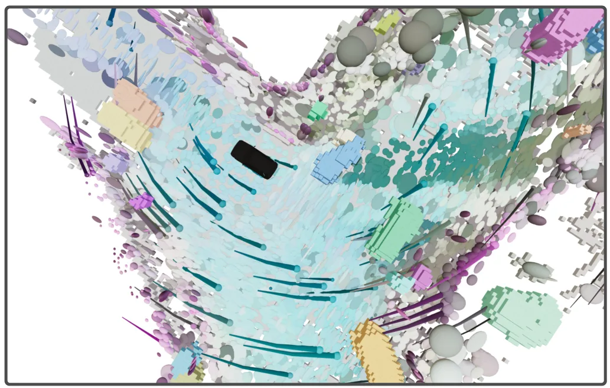
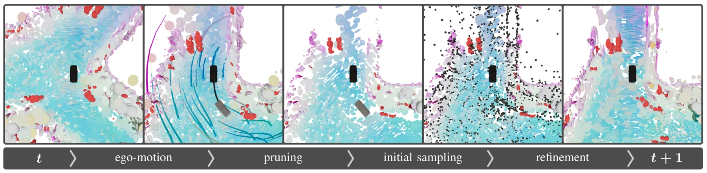
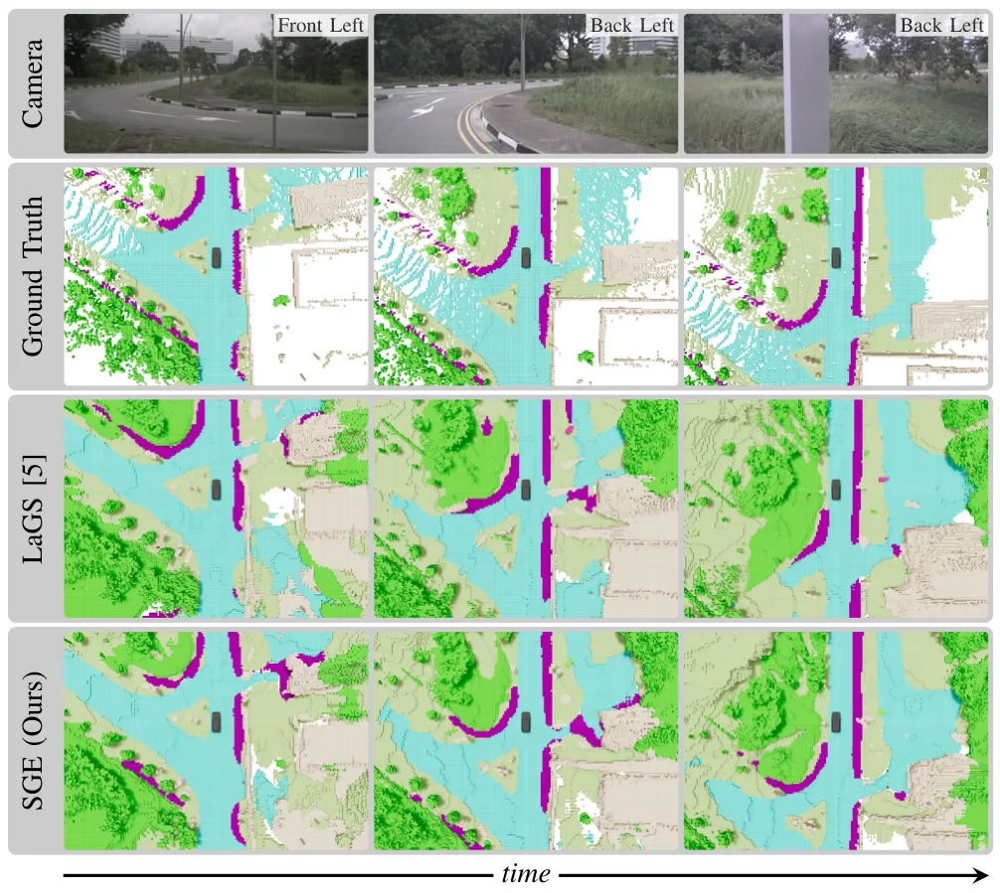
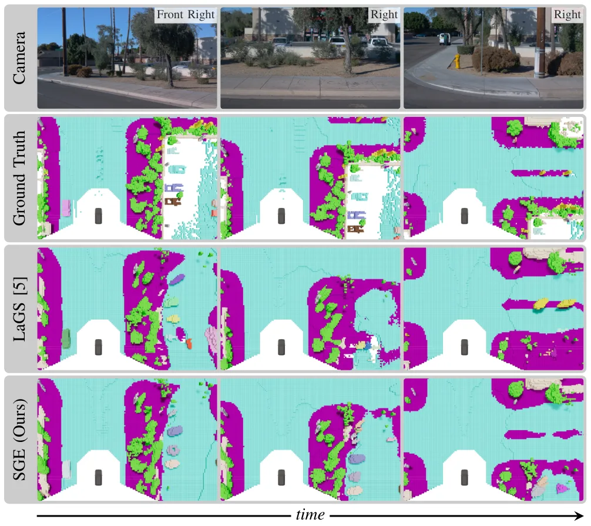
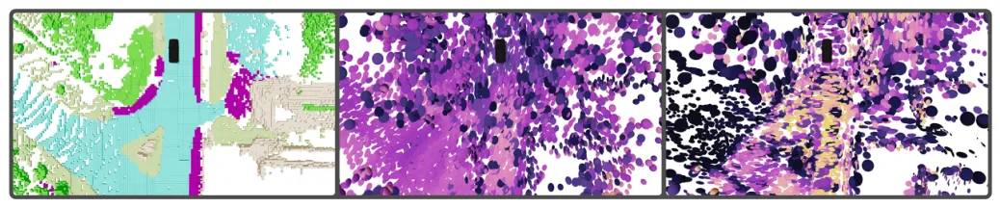
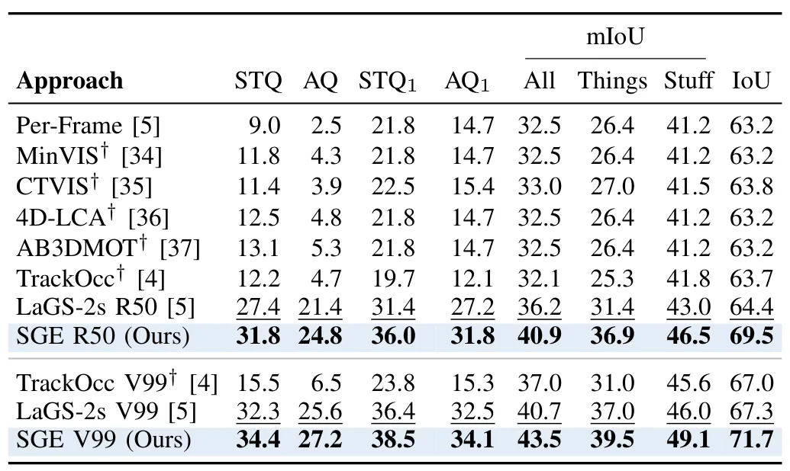
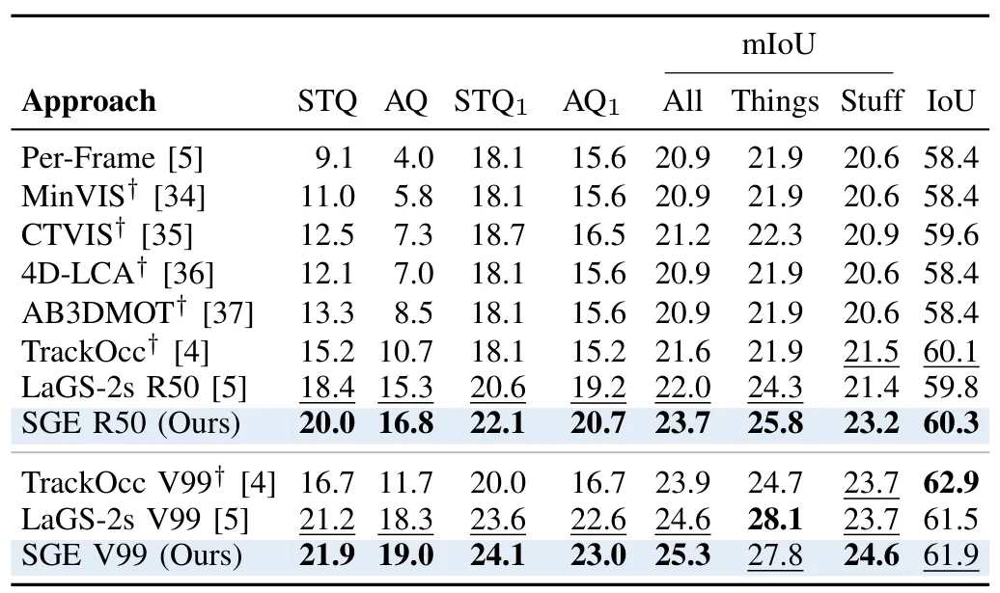
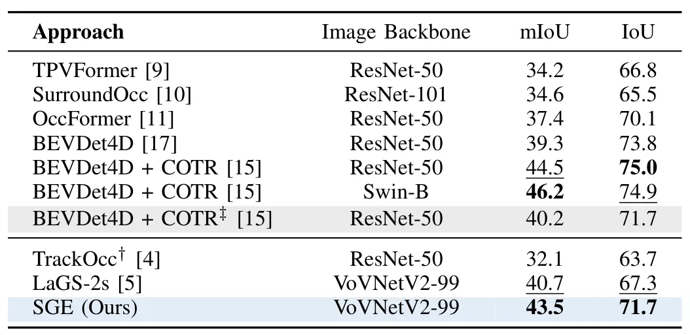
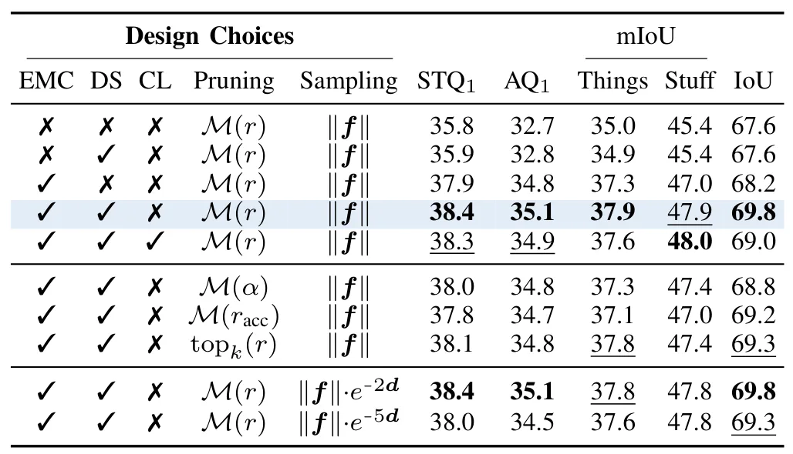
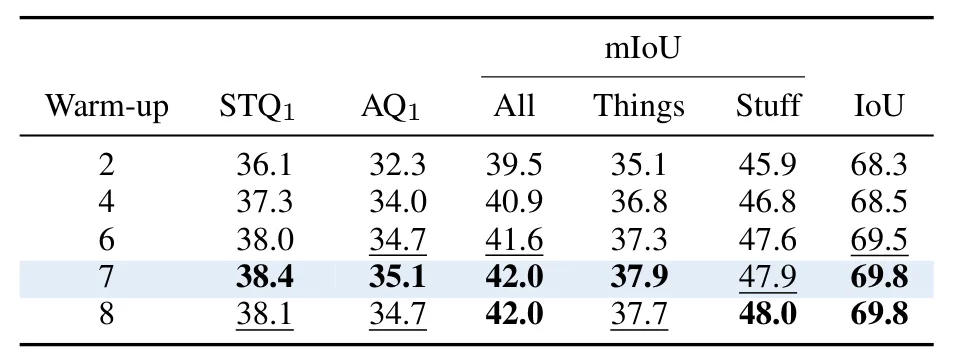

面向 4D 全景占用跟踪的流式 Gaussian 编码Streaming Gaussian Encoding for 4D Panoptic Occupancy Tracking
与 4D occupancy、语义建图、动态场景理解和 Gaussian 表示强相关；可作为在线地图中间表示参考。
一句话工作总结
用可跨帧传播的 latent Gaussian queries 做动态占用地图底座，适合关注在线语义占用与时序一致性的 SLAM/感知系统。
摘要
Camera-based 4D panoptic occupancy tracking 需要在时间上同时保持几何、语义和实例 ID 一致性。现有 mask-based pipeline 通常每帧重算体素表示，静态元素和遮挡场景下的几何时序一致性不足。该文提出 streaming Gaussian encoder，用固定数量 latent Gaussian queries 维护持久体积场景表示；queries 经过 ego-motion compensation 跨帧传播，并按 confidence-guided budget 刷新。深度监督塑造 Gaussian opacity，使其作为 visibility proxy，confidence 能随时间累计场景支撑。论文在 Occ3D-extended nuScenes 和 Waymo 上刷新 camera-based 4D-POT SOTA，且计算开销很小。
Camera-based 4D panoptic occupancy tracking (4D-POT) is a promising paradigm for holistic scene understanding from multi-view imagery, enabling joint reasoning about geometry, semantics, and object identities across time. Recent mask-based pipelines achieve strong performance by propagating instance queries across frames. However, their underlying volumetric representations are typically recomputed at each timestep, limiting geometric temporal consistency, particularly under occlusion and for static scene elements. To address this limitation, we propose a streaming Gaussian encoder that maintains a persistent volumetric scene representation for 4D-POT. Our method models the scene as a fixed-size set of latent Gaussian queries that are propagated via ego-motion compensation and refreshed under a confidence-guided budget constraint. Crucially, we shape Gaussian opacities through depth-based supervision to serve as proxy for visibility, enabling confidence to accumulate as a temporally aggregated measure of persistent scene support. Together with a warmup-based multi-frame training strategy, this yields representation-level temporal coherence beyond decoder-only tracking. Extensive experiments on Occ3D-extended nuScenes and Waymo establish a new state-of-the-art for camera-based 4D-POT, improving tracking consistency with negligible computational overhead while remaining fully compatible with existing mask-based pipelines. We provide code and models at https://sge.cs.uni-freiburg.de.
中文解读摘录
- 为什么看：把 persistent latent Gaussian queries 用于 4D panoptic occupancy tracking，比每帧重算体素表示更适合动态场景的时序一致性。
- 方法要点：固定数量 latent Gaussian queries 经 ego-motion compensation 跨帧传播，并按 confidence-guided budget 更新；用 depth supervision 让 opacity 近似 visibility，从而累计持久场景支撑。
- 结果信号：在 Occ3D-extended nuScenes 与 Waymo 上刷新 camera-based 4D-POT SOTA，并声称额外计算开销可忽略；代码/模型页面为 https://sge.cs.uni-freiburg.de。
- 跟踪建议：重点看 query budget、长期遮挡、动态实例 ID 保持，以及是否可作为在线语义占用地图的中间表示接入 SLAM。
- 链接：abs · PDF
图表/页面预览
{kind=link}

{kind=link}

{kind=link}

{kind=link}

{kind=link}

{kind=link}

{kind=link}

{kind=link}

{kind=link}

{kind=link}
